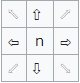
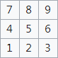

Mechanics
What can I do?
Melty Blood is a 2D anime fighting game, so as expected, you have the option to move omnidirectionally, and are able to cancel one move into different moves to "chain" them. General controls also apply, such as holding back to block moves. This game, however, has a big emphasis on midair engages. Unlike most fighting games, Melty Blood gives players many options when in air. In fact, you gain more advantages in the air than staying on the ground.
All 31 characters and its 3 Moon Styles can jump, double jump, airdash, and superjump (a bigger jump with more startup). Their strengths and variations do vary. Characters like Nanaya have faster superjump startups than others, while those like Vermillion Akiha have longer airdash distances. Number of airdashes and jumps also vary per character, though only two characters in the game (Aoko and Vermillion Akiha) have more than one airdash, while only Crescent Moon Aoko has a triple jump.
Paired with airdashes, each character can also dash on the ground on both forward and backward directions. Ground dashes also have different variations. Characters like Tohno have burst dashes that cover short distance quickly, while there are those like Ciel who have a running dash that cover longer distances albeit with slightly slow recovery if not cancelled into another move. Special cases also exist, such as Nrvnqsr's (Nero) teleports and Arcueid's side switches.
Notation
Melty's moves and combo sequences are notated with a combination of button letters and numbers, known as the Numpad Notation. Directions are notated by numbers while inputs are notated with letters A-E.
Direction notation uses the number pad in keyboards to denote its corresponding direction. For example, the number 2 denotes a down direction while 6 denotes a forward direction. Combinations of these numbers will create notations for motion inputs. For example, 236 denotes a quarter-circle motion input on the forward direction (quarter-circle forward), and 63214 denotes a half-circle input going from front to back (half-circle back).
 These are the directions...
 ...and these are its corresponding notations.
There are also some other essential notations listed below:
- j/dj/tj/sj/sdj
- - Denotes a jump input. "d" and "t" denotes double and triple jump respectively while "s" denotes superjumps
- - Jump notations are sometimes paired with a direction (j9, j8, etc.), which denotes what direction of jump input to use
- j.XYZ
- - Denotes inputs done midair
- [X]
- - Denotes inputs that are held/charged
- ]X[
- - Denotes inputs that are released after being held
- {X}
- - Denotes a "half-charge" (hold an input, but release before it fully charges)
- - Usually used for blockstrings and combos; no such move has different properties on a half charge
- (XYZ)
- - Usually denotes an optional move; can be omitted in the string without changing anything significant
- X(n) where n = number of hits
- - In multi-hit moves, it denotes the specific number or range of hits required before cancelling to another move for the string to work
- X~Y
- - In strings and combos, it indicates a delay between two normal move
- - When used with two specials, it indicates a chain of specials (called "rekka" in the community) input sequentially
- X(w)
- - Denotes a whiffed move. Used in strings and combos.
This is a metered combo for H-Ryougi
So what are the controls?
The game has 5 main buttons:
- the weak, medium and heavy attacks (namely A, B and C buttons)
- a shield button (D) which works similar to parries in other fighting games, with access to other moves and counters when successful.
Universal post-shield inputs include:- D → 236D
- - Shield Counter (Full Moon only; Moon Styles will be covered later on in this site)
- 214D
- - Shield Bunker (a move with an invincible startup, but high recovery on Full and Crescent Moons; can be done while blocking)
- * You are not limited to these two options post-shield. You can cancel successful shields into your character's special moves (except for Half Moon).
- a quick action button (E or QA) which inputs specific combinations of the other 4 inputs depending on the direction held.
These shortcut inputs include:- 5E: inputs A+B+C
- - Heat activation (will be covered later)
- 5E while on hitstun and MAX meter: inputs A+B+C
- - Circuit Spark. Breaks free from enemy hits/combos and knocks them away
- 5E hold (Full Moon only): inputs A+B+C
- - Circuit Charge. Charges the meter bar
- 6E/4E: inputs 6/4A+D
- - Throw. Can be done on ground and midair
- 2E: inputs 2A+B
- - Dodge. Crescent and Half Moon only
and gaining frame advantage.
Combinations of a direction and these 5 inputs (mainly A, B and C) result in different moves depending on the character's moveset.
There are also special movement inputs such as:
- 66/6A+B and 44/4A+B
- - Dash on the ground; Airdash in the air
- 28 and 29
- - Superjump; can be done midair as well
- (in hitstun midair) Direction + A/B/C
- - Air tech; cannot be done when counter-hit
- (in hitstun as soon as you land) 4/8/6
- - Ground tech; roll away after getting away from an air hit
- - Cannot be done when hit by most air combos
The Screen and the Bars
The image above shows the things you see in-game, important or unimportant. Common elements such as character names and portraits are not labelled.
- 1. HP Bar
- - Like every other HP bar, indicates health of the character
- - Each character has different HP and defense values. Some are more fragile to damage than others.
- - Unlike other fighting games, Melty Blood has two different types of HP: red health and yellow health.
- Yellow HP: Your actual HP. When this goes to zero, you lose.
- Red HP: Your healable HP. Red HP converts into Yellow HP through the use of Heat (covered later in the Meter bar) or specific healing specials.
2. Guard Bar- - Simply, the "HP bar" for blocking
- - Everytime a move is blocked, your Guard Bar gets damaged. When this depletes to zero, you enter a state of Guard Break, wherein you are left vulnerable and unable to do anything for a few seconds.
- - Every unsuccessful shield attempt will weaken your guard bar, making it more fragile to damage
- - Your Guard Bar heals when not blocking, but it can also be charged in pressure by doing EX Guards (timing your block to the hit) or through Shielding.
3. Color Palette- - The color palette the player is using for the character
- - Not essential information
4. Moon Style- - Shows the Moon Style the player is using for the character
5. Magic Circuit- - The "Meter Bar" of Melty
- - An essential bar in the game that allows you to do stronger special moves called EX moves, which cost 100 meter
- - Have a maximum value of 300 for Crescent and Full Moon and 200 for Half Moon
- When your meter reaches its max value, Crescent and Full Moon enter MAX Mode, a state wherein you are free to cast EX moves without spending meter. The MAX meter depletes overtime, but will go back to 200 on Crescent and 100 on Full if not used for Circuit Sparks or Blood Heat (a stronger Heat)
- Half Moon, on the other hand, automatically enter Heat instead of MAX. They have the same meter-spending properties as MAX, but it does not restore any meter after its duration
Above are the different states that your Magic Circuit can take.
- Neutral
- - the regular state of your Magic Circuit; typical meter bar
- MAX Mode
- - a state wherein you are free to cast EX moves without spending meter
- - this meter depletes overtime, and will deplete a porton of the bar if an EX move is cast
- Heat
- - a meter state similar to MAX with an additional effect of slowly healing your Red HP
- - invincible on startup, and knocks away opponents nearby to the opposite side of the screen
- - allows the use of an Arc Drive - a powerful EX move that each character possesses, but is very risky to mindlessly throw out
- Blood Heat
- - a stronger version of Heat which allows you to cast Last Arcs - a very powerful unblockable move done by frame-perfect shielding in specific conditions
- - Arc Drives are also buffed into a stronger version called Another Arc Drives
Crescent? Half? What's that?
One of the many unique aspects of Melty Blood is its Moon Style system.
You may have noticed that after selecting a character, the game allows you to pick between 3 different Moon Styles with some kind of description pertaining to a "playstyle". Isn't a character supposed to have one playstyle? How does this playstyle differ by changing meter mechanics?
First of all, a different Moon Style will change almost everything in a character's kit. A Moon Style of one character is basically a different character altogether, accompanied by general mechanic changes thus the change in "playstyle".
So aside from moveset differences, what are these general changes?
| Property | Crescent | Half | Full |
|---|---|---|---|
| Maximum Magic Circuit | 300 | 200 | 300 |
| Circuit Charge | No | No | Yes |
| Shield | Normal and EX, Holdable | Normal, No Hold | Normal, Holdable |
| Shield Bunker | 50 meter, damage | 100 meter, fast w/ no damage | 50 meter, damage |
| Shield Counter | None; cancel into any special | Auto | 236D |
| Max Activation | Auto | None | Auto |
| Heat Activation | A+B+C at >100 meter | Auto | A+B+C after most moves; heals all Red HP instantly |
| Blood Heat Activation | A+B+C at Max | None | A+B+C at Max; heals all Red HP instantly |
| Circuit Spark | A+B+C in Stun at Max | A+B+C in Stun at 200 or Auto when hit at Heat | A+B+C in Stun at Max |
| Reverse Beat* | Yes | Yes | No |
| Dodge | Yes | Yes | No |
| Airdash Cancel | univ. normals | univ. normals | j.A only |
| * a mechanic in which attacks of higher hierarchy are cancelled into a lower hierarchy at the cost of halving all subsequent damage i.e 5C → 5A | |||
There is no "one best Moon Style" for all the characters in the game - each player has a preferred Moon Style and playstyle. For example, C-Kohaku is an amazing character with wide range, big damage and unescapable setups, while F-Kohaku specializes on opening up defensive opponents through throws and grapples. These are two different playstyles, and it is your choice on which one you like more.
It is widely accepted though that C-Moon offers the most utility out of other Moons because of a freely castable Heat, a Reverse Beat mechanic and EX shields (which give you even more guard meter than regular shields). Then again, it depends on the character's moveset. For example, H-Moon is considered the weakest moon due to its unreliable automatic activations, but compared to the other Moons, it is the best Moon Style for characters like Ryougi and Hisui.
The Moveset
Now that we have covered the general mechanics of the game, let us now talk about what your character can actually do. These sets of actions that a character can do is called a moveset. Each character and each of their Moon Styles have different movesets, but moves in a moveset are generally categorized into Normals and Specials.
Normals
These moves are the backbone of a character's gameplan. The properties that these moves have will affect what you can do on neutral, pressure and defense. It is, as its name suggests, a regular attack, ranging from jabs and kicks to claws and head butts. Nothing really flashy, but very essential in achieving victory.
The most important normal in the game is 2A. It is every character's fastest move, it hits low and it is safe on block. This move forms the building blocks of basic offense and defense. The properties of a 2A defines how the character is supposed to pressure their opponents and to get out of their pressure.
Repeatable: Yes
Startup: 4f
Frame Advantage: -1f
Repeatable: No
Startup: 6f
Frame Advantage: 1f
We can show these properties' importance by comparing the two 2As on the left.
The most drastic difference between the two is whether the 2A can repeat or not. C-Nanaya has a repeatable 2A, therefore he can use it as an engage move and repeat it a number of times to force the opponent to block. Its fast speed and decently long reach also lets him use 2A to get out of pressure.
C-Seifuku on the other hand cannot repeat her 2A (meaning she has to wait for the move to finish before she can do it again). This changes what she must use her 2A for, which should be different from C-Nanaya's. In this case, she uses her 2A to end her blockstrings because she gains a 1 frame lead (or what we call "frame advantage") vs. the opponent so most actions she would do after comes out before any attack the opponent throws out. Its slow speed does not make her 2A a great get-off-me tool, so she has to rely on other tools in her moveset for this matter.
Lastly, keep in mind that all universal normals (2/5A, B and C) cannot be blocked in air, meaning it is a useful tool to say, trap opponents in the corner.
Specials
Unlike Normals, Specials go in a wide variety of properties, looks and purposes. It is a move that is "special" to the character and complements the rest of their moveset. While Normals set the foundation for a character's strengths and weaknesses, Specials further strengthen the positives and compensate the negatives.
In Melty Blood, Specials are input using the basic motion inputs in fighting games, such as:
- 236X and 214X (quarter-circle)
- 623X and 412X (dragon punch)
- 22X ("teabag" input)
- 63214X and 41236X (half-circle)
Complex inputs such as combinations of any of these 4 are not essential in Melty, because the only special that uses a pretzel input (1632143C) has a very, very, very niche use.
Specials at an artistic viewpoint define each character by characteristics like fighting styles and special abilities.
Simply put, Specials are non-standard moves that further define and give personality to the character's moveset. Say for example, the zoning specials of characters C-Aoko and C-Roa (shown below).
Both of these moves serve the same purpose, yet they achieve their results in different ways.
C-Roa's zoning tool relies on shooting down the opponent with a lightning (literally) fast projectile from a distance. This is an offensive way of zoning out a person by forcing them to stay on one area of the stage.
C-Aoko's zoning on the other hand, relies on keeping the opponent off the player. This is the opposite of C-Roa's way of zoning, in which this is a defensive way. Aoko lets the opponent run freely anywhere except her orb territory (or commonly known as her "orb fortress").
Both of these specials complement the entire moveset of their characters. Just from these small descriptions of one move, we can see the strengths of the character. C-Roa likes to force mistakes from the opponent through offense while C-Aoko likes to play patient and wait for mistakes through defense.